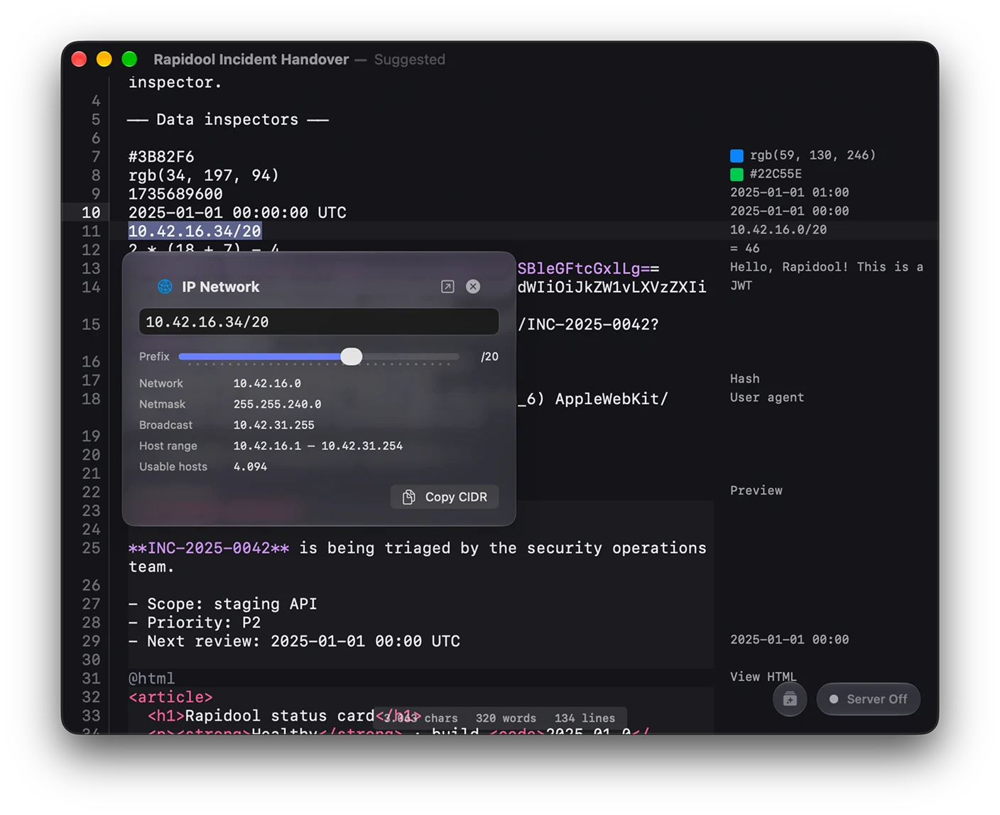
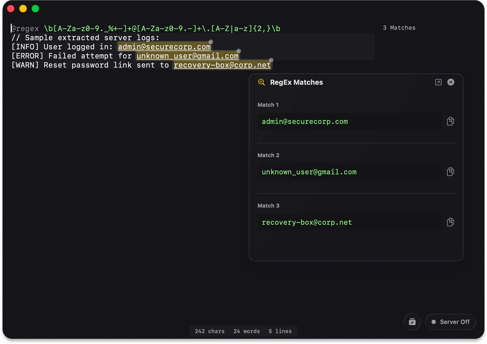
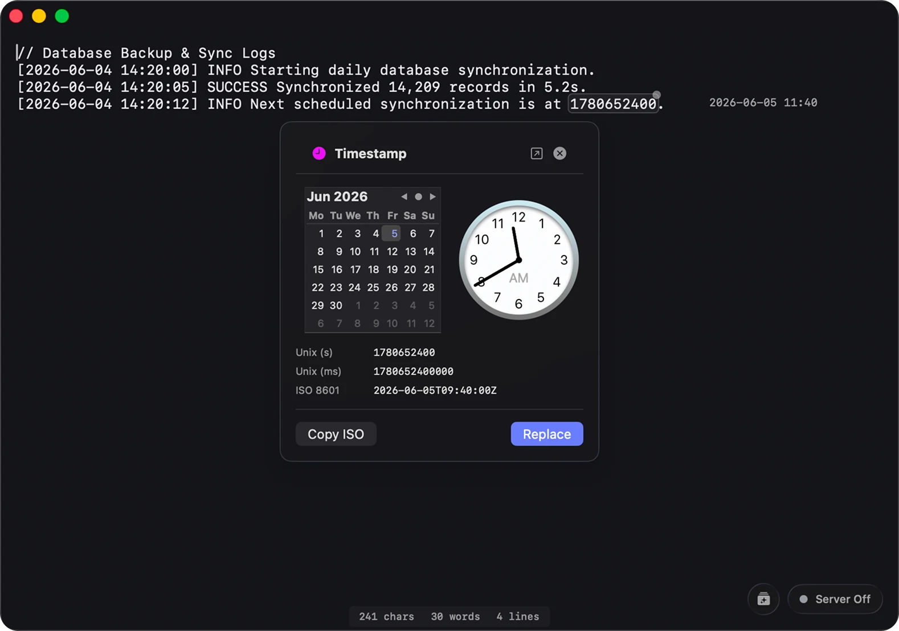
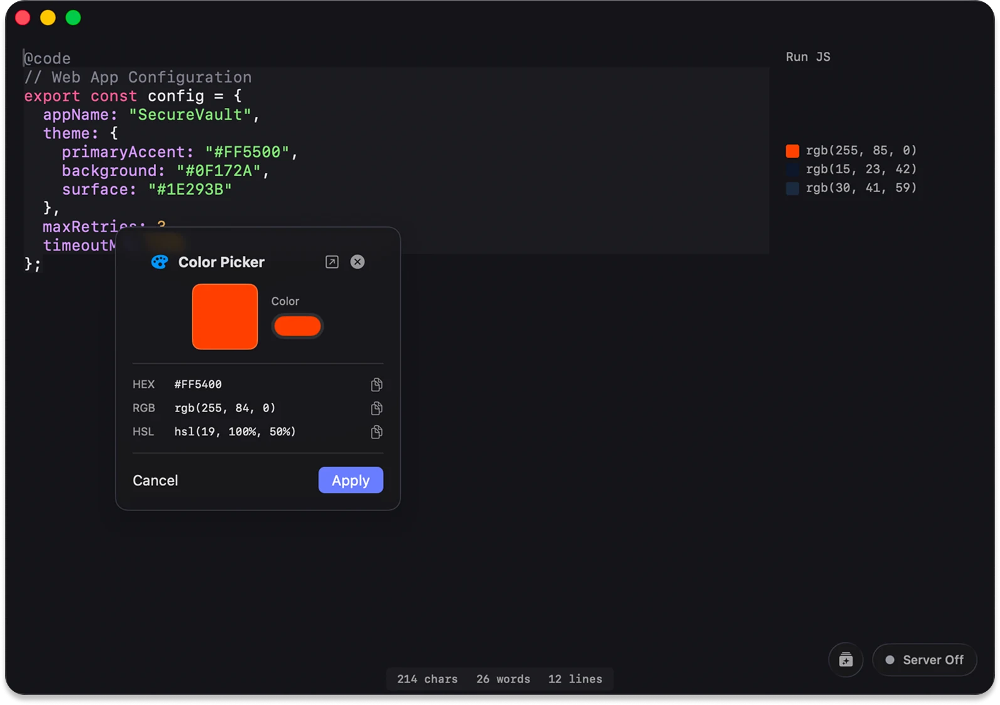
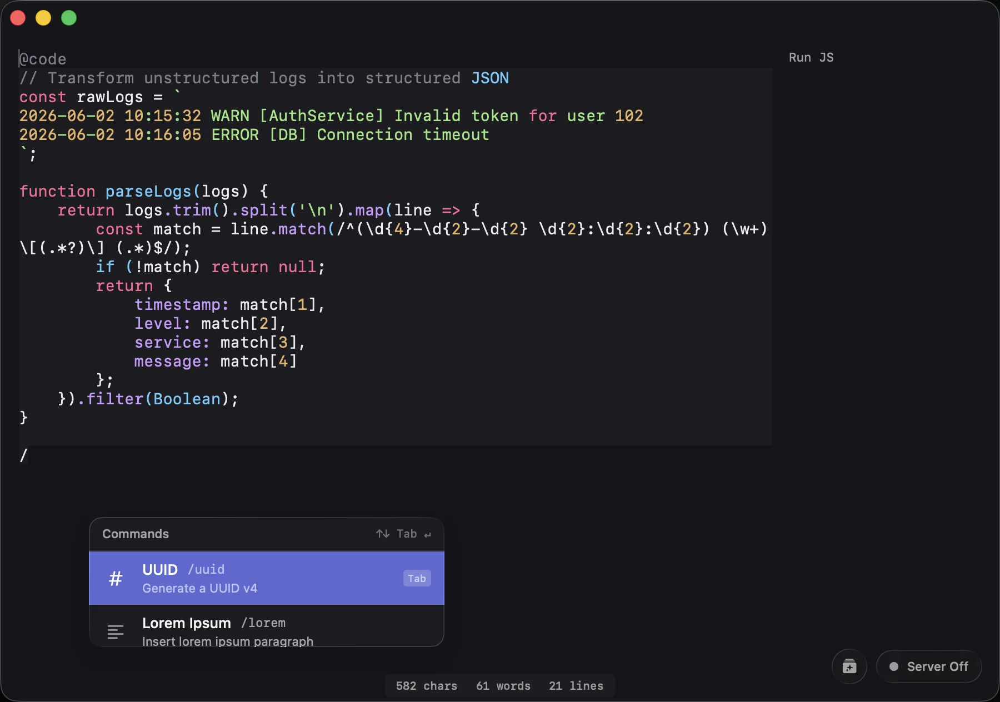
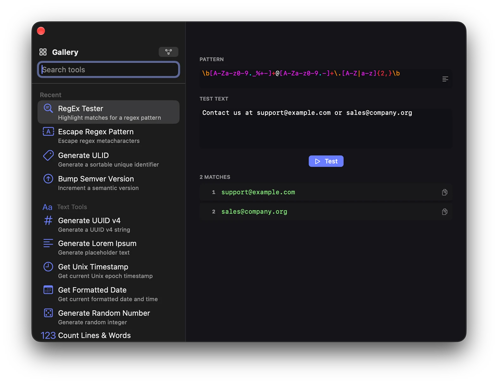
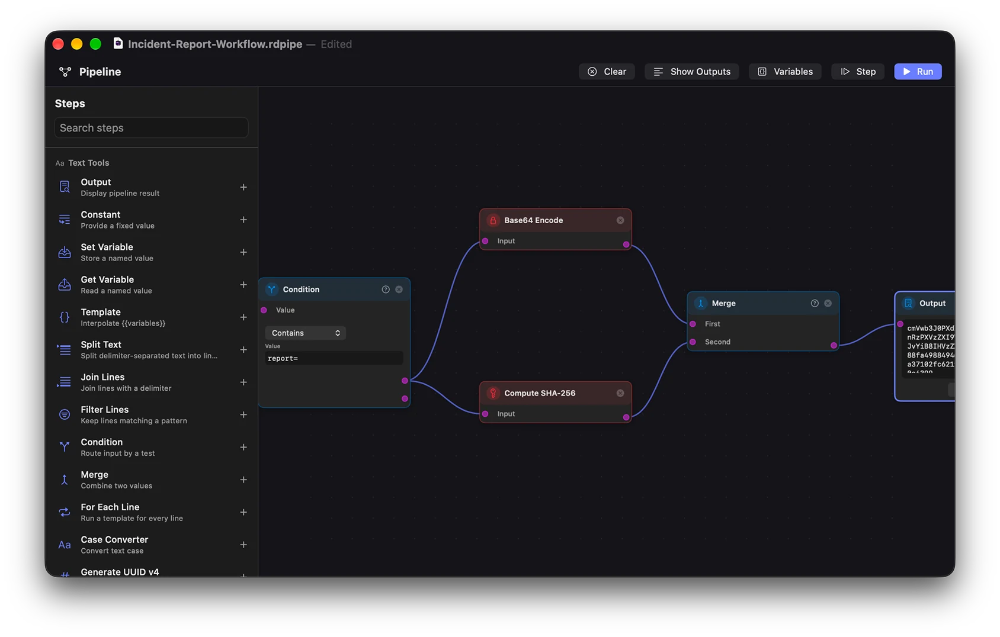
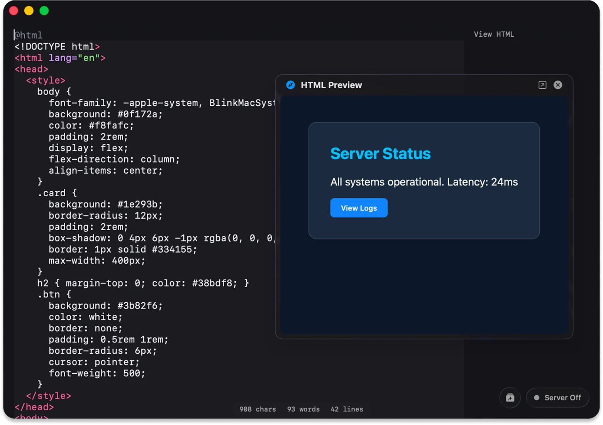
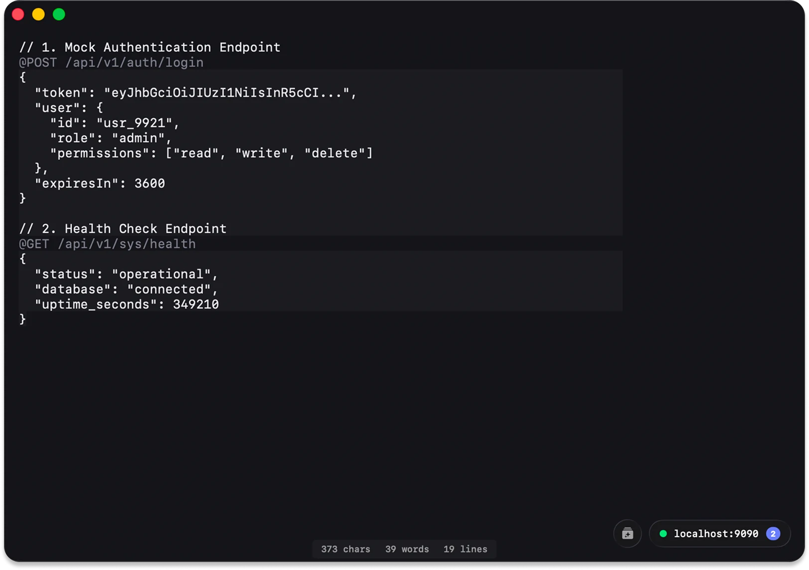
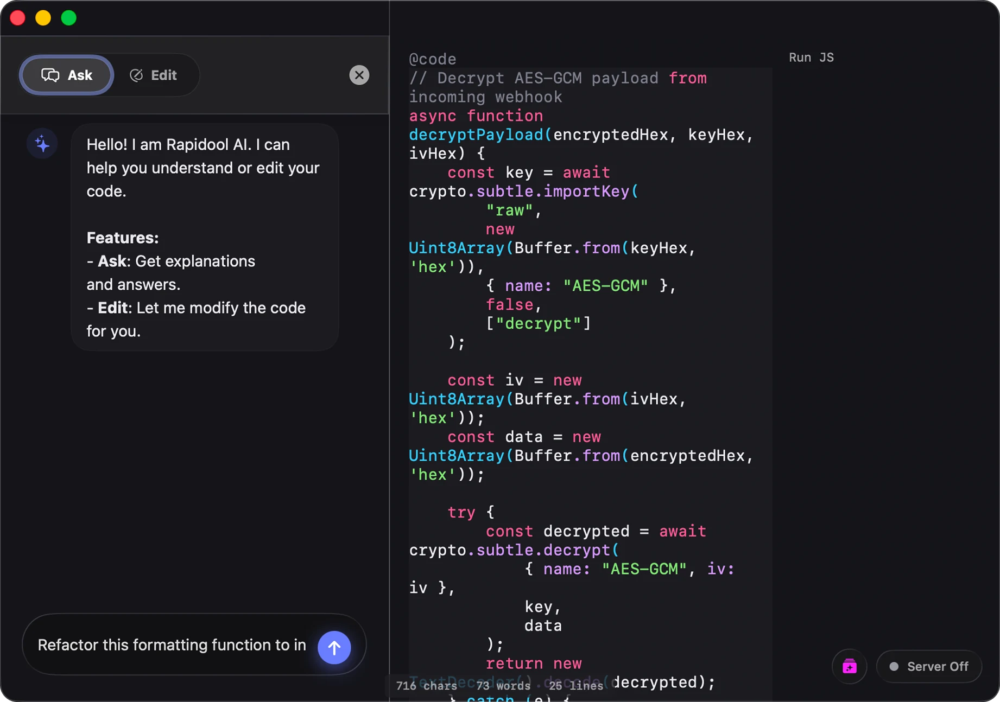

A scratchpad that
does the work.
Keep your notes, logs, and tests in one text editor. Inspect what you paste, run tools right where you write, and save recurring work as a pipeline.
Free trial on the App Store · macOS 14.6 or later

Scratchpad · Inline tools
Make sense of what you paste.
Paste a log, payload, or config into the same document where you’re taking notes. Rapidool recognizes values as you type or paste and puts previews and inspectors next to the text. Open one to read a JWT’s claims, decode Base64, explore an IP subnet, or check a timestamp. That’s a sample of the tools available right in the editor.



Scratchpad · Sections
Give a block of text its own tool.
Start a line with @ to browse available sections. Put the tag and any arguments on the same line, then add the text to process below. Use @text to return to ordinary writing.
Checkout deploy · triage notes
@regex \bINC-\d{4}\b
Gateway timed out. See INC-2042.
Health checks recovered on retry.
@text
Follow up with the gateway team.@regex [a-z]+- Write the pattern after the tag and put the test text below. See which parts match as you edit.
@lines dedupe- Paste lines below the tag to remove repeats while keeping the first occurrence of each line in its original order.
@log-viewer- Filter a pasted log by severity while keeping the original lines in your note.
@inspect messagepack- Open a structured view of MessagePack data. Use
@inspect websocketto inspect WebSocket frames.

Scratchpad · Slash commands
Insert results where you write.
Type / on a new line, choose a command, and press Return to replace that line with the result. Generate a UUID for a fixture or stamp a note with the current Unix time without leaving the document.
/ts- Insert the current Unix timestamp.
/uuid- Generate a UUID.
/date- Insert the current date and time.
Command Gallery
Find the tool while the problem is still in front of you.
Search the gallery to run a quick command, transform a selection, or insert a working section into your scratchpad. Try a regex against sample text before taking it back to your code.
- Text & logs
- Regex Tester, Syslog Parser, Time Delta Calculator
- Data
- JSON to TypeScript, MessagePack Inspector, SHA-256
- HTTP & networking
- HTTP Header Parser, WebSocket Frame Parser, IP Subnet Calculator

Pipeline Editor
Do it once.
Run it whenever.
Connect operations on a canvas, branch when the data needs it, and see what comes out at each step. Save the pipeline and run it against the next batch instead of rebuilding the workflow.
Clean up a deployment log
Step through an example pipeline.
09:41 INFO build complete 09:42 ERROR verify: timeout 09:42 ERROR verify: timeout 09:43 INFO retry started 09:44 ERROR deploy: unavailable

Prototyping
Try the idea before you build the project.
Run a small JavaScript experiment, preview an HTML component, or give a frontend a local API to talk to.



Local-first
Keep your work on your Mac.
Format payloads, run scripts, and serve mock endpoints offline. Open the floating Rapidool Bar from any app with ⇧⌘ Space.
Ask for help with a draft or a script using Rapidool’s downloadable on-device model, a local Ollama instance, or a remote API you configure.
Put Rapidool to work.
Questions about Rapidool
Do I need an internet connection?
The scratchpad, built-in text and data tools, JavaScript, pipelines, and mock HTTP server run locally. The built-in AI model runs on-device after its initial download. If you choose a remote AI endpoint, requests go to that endpoint.
Can I reuse a pipeline with different input?
Yes. Save the workflow, reopen it, and run it again with a fresh sample. You can inspect results along the way and export a pipeline as a .rdpipe file.
Can I add my own commands?
Yes. Add a JavaScript file to Rapidool’s RapidoolScripts folder in Documents and call it as a slash command in the editor.
Is there a free trial?
Eligible App Store users can start a free trial with the monthly plan. A one-time lifetime purchase is also available. It requires macOS 14.6 or later.
Bring your next task to Rapidool.
Start with the thing you were about to open another tab for.
Try Rapidool freeFree trial on the App Store · macOS 14.6 or later
The Rapidool newsletter
Get scripting examples, workflow tips, and release notes.